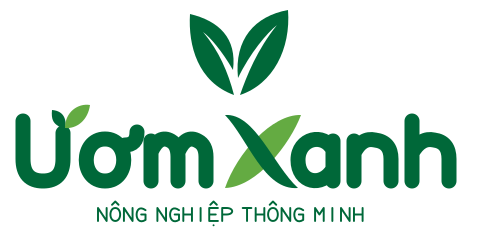

NHÓM 4 · CÔNG NGHỆ ĐA PHƯƠNG TIỆN · 01
Ươm một nét chữ.
Nuôi một nhận diện.
Hệ thống logo Ươm Xanh — Nông nghiệp thông minh. Tài liệu thiết kế và bằng chứng cấu trúc vector, dùng khi trình bày đồ án.

01 — Ý tưởng & quá trình
Giữ tinh thần hai chiếc lá từ biểu tượng được cung cấp, dựng lại bằng hai hình Bézier có khoảng âm gợi gân lá. Phần chữ là một bộ nét hình học mới được viết trực tiếp cho tên Ươm Xanh, không chuyển outline từ font Be Vietnam Pro và phát triển theo mẫu wordmark mới do người dùng cung cấp.
- Chọn nét tròn và độ dày thống nhất để tạo cảm giác gần gũi.
- Dựng riêng bảy cụm chữ: Ư, ơ, m, X, a, n, h bằng tọa độ Bézier.
- Cách điệu dấu móc Ư thành mầm lá, chữ X thành hai lá giao nhau; nối dấu móc ơ vào thân chữ, chừa khoảng thoáng để dấu không dính ở kích thước nhỏ.
- Cân khoảng giữa hai từ và đối trọng với biểu tượng lá.
- Xuất các biến thể, kiểm tra nền sáng/tối và kích thước header.
Bản cập nhật theo mẫu: chữ đậm mềm, dấu Ư gợi mầm cây và chữ X là hai lá giao nhau. Nền ô caro trong ảnh tham chiếu không được đưa vào logo. Đây là thiết kế được phát triển trong dự án với hỗ trợ công cụ lập trình. Mã dựng có thể đọc và tái tạo ở tools/build-logo.py; không nhúng dữ liệu font hoặc hình raster trong SVG xuất ra.
02 — Lưới dựng & nét chữ
Lưới cơ bản: 10 đơn vị. Trong hệ tọa độ chữ, đường đỉnh chữ hoa ở y=16, đỉnh chữ thường y=34, chân chữ y=76. Độ dày nét chính 15 đơn vị, đầu nét và góc nối bo tròn. Dấu móc vươn khỏi chiều cao chữ thường để giữ đặc trưng tiếng Việt.
Ư: lòng chữ rộng và cong ở đáy, gợi sự đón nhận. Ơ: vòng cong kết hợp móc hướng lên, gợi chuyển động phát triển. X: hai nét cong giao nhau, kết nối hai phần tên. Các chữ m, n, h dùng cùng nhịp vòm; chữ a một tầng giữ hình dáng giản dị. Tagline dùng bộ chữ nét đơn riêng, nhỏ hơn để không cạnh tranh với tên thương hiệu.
03 — Bảng màu
Xanh thương hiệu
#006839
Xanh nền tối
#173F31
Nền xanh nhạt
#EFF6E8
Đơn sắc sáng
#FFFFFF
Logo dùng một màu chính, không gradient. Bản trắng dành cho nền tối đồng nhất; không đặt logo xanh lên nền xanh tối hoặc ảnh nhiều chi tiết.
04 — Các biến thể

Đầy đủ: slide, bìa tài liệu, khoảng trống rộng.
Ngang: header, menu mobile, footer, cảnh video.

Đơn sắc trắng: nền tối.
Favicon: chỉ dùng biểu tượng, nền sáng giúp rõ trên tab sáng/tối.
05 — Khoảng trống & kích thước
Gọi x = 15 đơn vị, bằng độ dày nét chữ. Giữ tối thiểu 2x quanh logo, tương đương khoảng 6 px khi logo rộng 210 px. Không đặt chữ hoặc đường viền khác vào vùng này. Logo ngang trên web: desktop 210 px, mobile 165 px; mức tối thiểu khuyến nghị 165 px khi giữ tagline. Nhỏ hơn mức này ưu tiên biểu tượng lá.
Mẫu thực 165 px — kiểm tra ở mức zoom trình duyệt 100%.
06 — Dùng đúng & tránh dùng sai
Đúng: giữ nguyên tỷ lệ, đủ khoảng trống, nền tương phản.
Sai: ép dẹt logo hoặc kéo giãn riêng một chiều.
Không thay chữ bằng font hệ thống, tách dấu móc, thêm bóng/viền, xoay biểu tượng hoặc đặt trên ảnh rối. Không sử dụng bản trắng trên nền sáng. Các biến thể đều dùng cùng dữ liệu chữ gốc.
07 — Hồ sơ kỹ thuật
SVG chỉ gồm path, group và hình vector cơ bản. Không có <text>, <image>, PNG hay base64. Nét SVG giữ sắc khi phóng to; width/height và viewBox cố định giúp chừa đúng không gian tải. Các ảnh logo trên website có accessible label bằng tiếng Việt.
Tagline: “Nông nghiệp thông minh”, trình bày dạng chữ hoa vector. Font Be Vietnam Pro chỉ tiếp tục dùng cho nội dung website và tài liệu này, không dựng chữ trong logo mới.
Trở về website